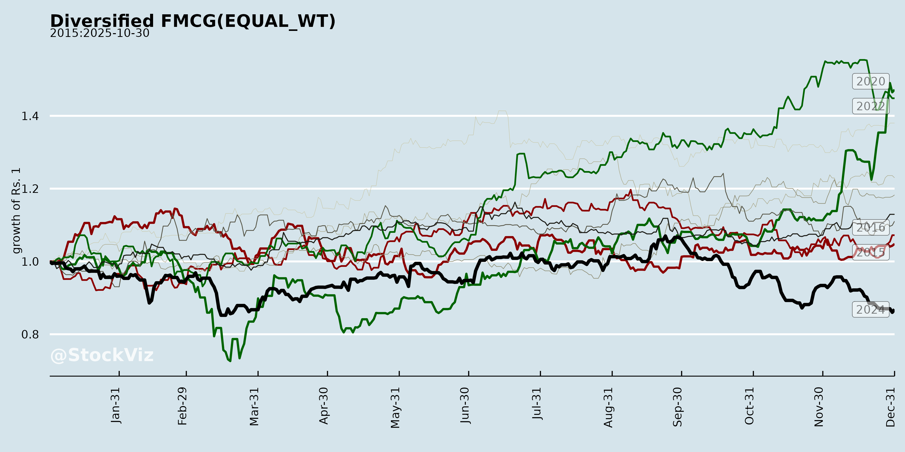
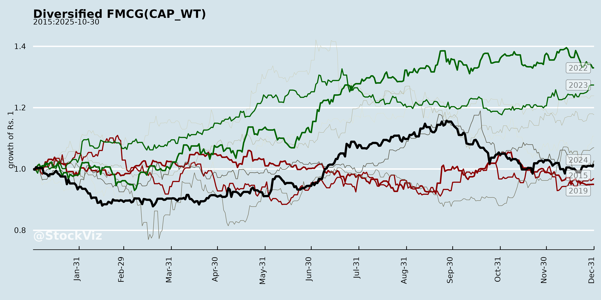
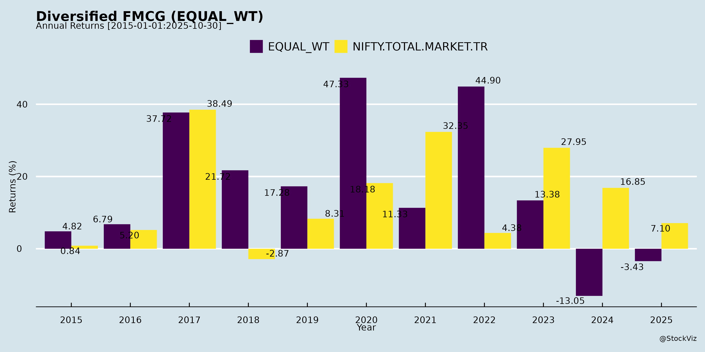
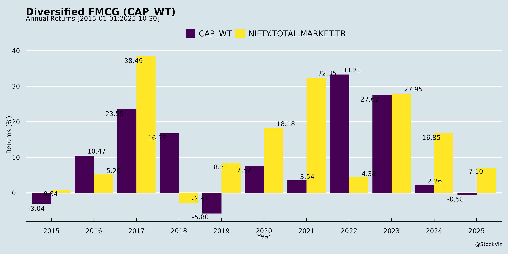
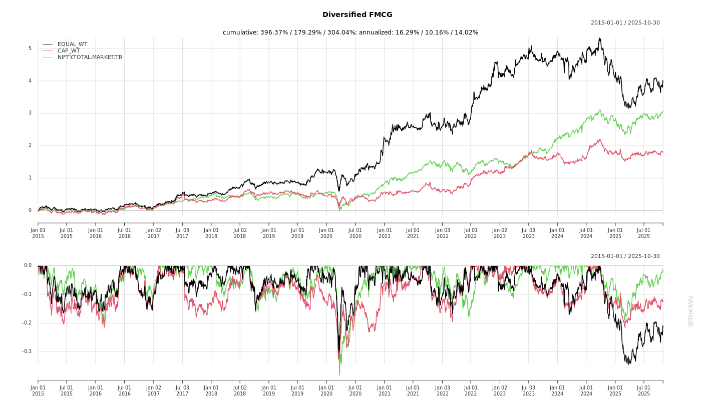
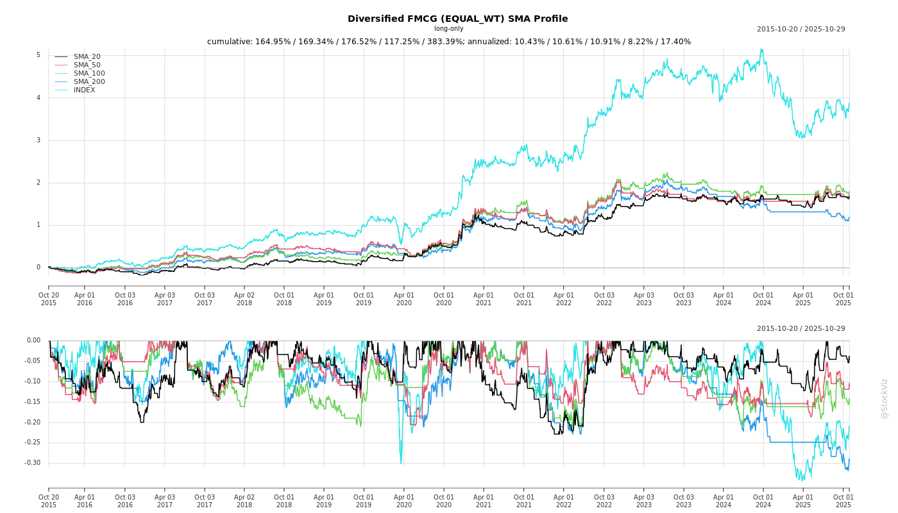
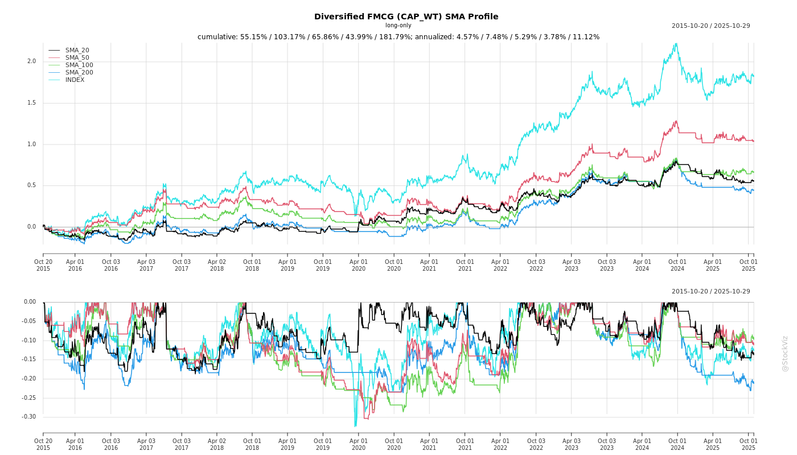
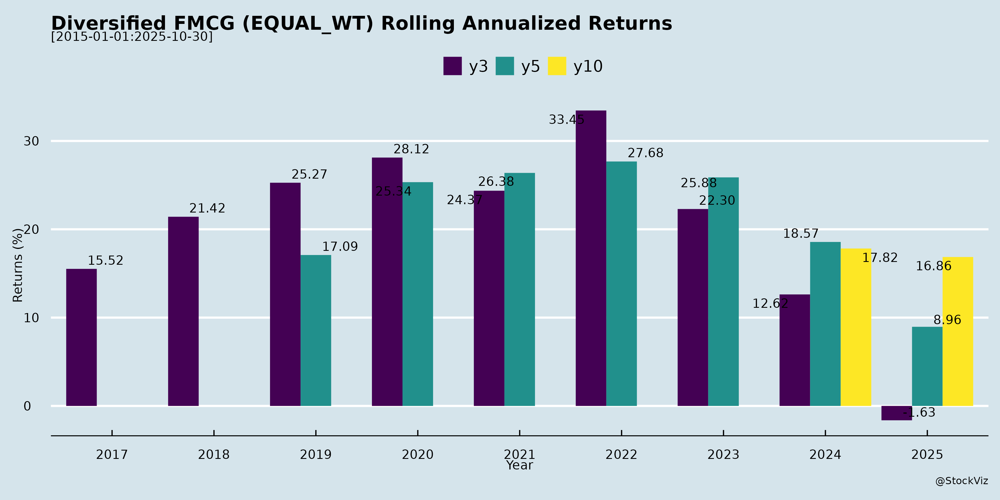
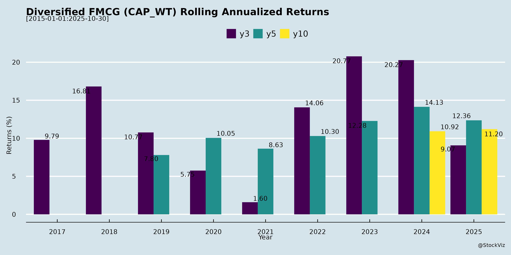

asof: 2025-11-29
Analysis of Indian Diversified FMCG Sector
Using the provided documents (earnings transcripts from Godavari Biorefineries Ltd. and Hindustan Foods Ltd., plus analyst meet intimations from Davangere Sugar, HUL, and ITC), this analysis focuses on the Indian Diversified FMCG sector. Insights draw from sugar/ethanol/bio-chemicals (Godavari, Davangere – agri-FMCG linkages via sugars, biofuels, specialty chems), contract manufacturing (Hindustan Foods – HPC, F&B, ice cream, healthcare, footwear), and pure/diversified FMCG (HUL, ITC). The sector shows resilience amid agri-volatility, with growth from diversification, policy tailwinds, and capex execution.
Tailwinds
Headwinds
Growth Prospects
Key Risks
| Risk Category | Details | Mitigation |
|---|---|---|
| Policy/Regulatory | Ethanol pricing delays, export curbs, grain bias; GST implementation lags. | Multi-feedstock (grain distillery); policy advocacy. |
| Operational | Seasonality (Q3-Q2 ethanol crush); ramp-up failures (shoes/ice cream); labor hikes. | Backward integration; debottlenecking; 1:1 debt-equity cap. |
| Financial | High capex intensity (INR2,000cr block); WC strain in shoes/F&B; job-work skews topline. | Internal accruals (INR200cr/yr); net D/E 0.67→1.0; ROE focus. |
| Market/External | Ethanol oversupply; bio-chem geopolitics; agri-climate risks. | Diversification (specialty chems 60% EBITDA jump); sustainability. |
| Execution | M&A integration; 6-18mo pharma gestation. | Disciplined allocation; proven 22%/32%/30% 4-yr CAGR (rev/EBITDA/PAT). |
Summary
Bullish Outlook with Balanced Risks: Indian Diversified FMCG benefits from agri tailwinds (monsoons, exports), policy (ethanol/GST), and execution (capex, shared mfg.), driving 15-25% growth. Godavari exemplifies bio-FMCG innovation (chems/ethanol recovery); Hindustan Foods contract mfg. scale (INR1,000cr/Q milestone). Prospects: EBITDA positivity, 20%+ CAGR via diversification. Headwinds (pricing stagnation, ramps) are mitigable; key watch: ethanol tenders, Q3 crush. Sector ROCE/ROE to improve (5%+ PAT in shoes). Overall: Positive, with FY26 as inflection (EBITDA up 17-60% in samples). Investors: Focus EBITDA/PAT over topline due to contract nuances.
asof: 2025-11-30
asof: 2025-12-03
Analysis for Indian Diversified FMCG (Focus: HUL, ITC, and Peers like Hindustan Foods)
Using the provided filings as inputs, the analysis focuses on Hindustan Unilever Limited (HUL)—a core diversified FMCG player—as the primary lens, supplemented by ITC (diversified with strong FMCG), Hindustan Foods (FMCG contract manufacturing), and tangential insights from sugar/biorefinery peers (e.g., input cost linkages via sugar/ethanol). Key themes include corporate restructuring (demergers, delistings), governance transitions, ESG, IP, and expansion plans. Dates are futuristic (2025), indicating forward-looking disclosures.
Tailwinds (Positive Drivers)
Headwinds (Challenges)
Growth Prospects
Key Risks
| Risk Category | Description | Mitigation from Filings |
|---|---|---|
| Execution/Regulatory | Scheme delays (NSE/BSE letters); board resignations disrupt KWIL ops. SEBI scrutiny on disclosures. | Ongoing filings ensure compliance; same-city office shift minimizes disruption. |
| Governance | Reconstituted boards in transitions (KWIL); director exits without profiles/relationships disclosed. | SEBI circular adherence; gratitude letters indicate amicable exits. |
| Market/Operational | Agri-volatility (sugar/ethanol peers); delisting reduces visibility. ESG “Adequate” rating signals room for improvement. | Farmer incentives (Davangere); retained major listings (ITC). |
| Financial | Expansion capex (e.g., Davangere’s CO₂ plant); unengaged ESG ratings may overlook gaps. | Rights issue funding; public data-based ratings. |
Overall Summary: Indian Diversified FMCG (e.g., HUL, ITC) benefits from tailwinds like demergers (value unlock) and input stability, with strong growth prospects in premium/rural segments (8-12% CAGR). Headwinds are transitional (board changes), but key risks center on scheme execution and agri-volatility. Positive sentiment from ESG/IP signals resilience; monitor Q4 FY26 for scheme effectiveness. HUL emerges strongest post-KWIL spin-off.
asof: 2025-11-29
Using the provided documents as inputs, this analysis focuses on the Indian Diversified FMCG sector (e.g., companies like Hindustan Unilever (HUL), ITC, and related players such as contract manufacturers like Hindustan Foods Limited (HFL), and upstream suppliers like sugar/biorefinery firms (Davangere Sugar, Godavari Biorefineries) that feed into FMCG via sugar, ethanol-derived products, and bio-chemicals). Insights are derived from earnings calls, investor presentations, and disclosures highlighting operational/financial performance, industry outlooks, and strategic shifts. The sector shows resilience amid diversification into foods/beverages, HPC, healthcare, ice creams, and biofuels, but faces agro-policy and execution challenges.
| Metric | H1 FY26 Snapshot (Key Cos) |
|---|---|
| Revenue Growth | HFL: +16%; Godavari: +14% |
| EBITDA Growth | HFL: +17%; Godavari: Loss narrowed |
| PAT Growth | HFL: +33% |
| Capex Plans | HFL: ₹550+ Cr H2; Davangere: Rights issue ₹149 Cr |
Overall Summary: Indian Diversified FMCG remains buoyant (16-34% revenue growth in sampled firms) on policy tailwinds (ethanol/GST), diversification (new categories/M&A), and sustainability (biofuels/CO2 tech). Prospects point to 20%+ CAGR via capacity ramps, but headwinds like pricing stagnation and execution risks temper optimism. Focus on EBITDA/PAT (not topline) for true growth gauge; monitor Q3 FY26 for season starts (sugar/ice cream). Sector resilient but policy-dependent.
asof: 2025-11-29
Analysis of Indian Diversified FMCG Sector (Focus: HUL, ITC, Hindustan Foods; Context from Agro-Inputs like Godavari Biorefineries & Davangere Sugar)
Using the provided filings (board appointments at HUL & ITC, postal ballot/scheme at ITC & Hindustan Foods, Q2/H1 FY26 financials from Godavari & Davangere), here’s a structured analysis for the Indian Diversified FMCG sector. Core players (HUL, ITC) show governance strengthening amid stable operations; ancillary agro-food firms (sugar/distillery) highlight input cost pressures relevant to FMCG (e.g., sugar/ethanol as inputs). Sector faces cyclical commodity headwinds but tailwinds from leadership & restructuring.
Tailwinds (Positive Drivers)
Headwinds (Challenges)
Growth Prospects
Key Risks
| Risk Category | Details | Mitigation from Filings |
|---|---|---|
| Commodity/Seasonal Volatility | Sugar cycle losses (Godavari sugar: -₹32 Cr H1); harvesting inflation. | Inventory normalization; distillery pivot (Davangere 87% revenue). |
| Debt & Finance Costs | Godavari borrowings ₹493 Cr (up 30% YoY), interest 3% of revenue; Davangere ₹198 Cr. | Cash inflows (Godavari ops: +₹94 Cr); equity infusions (Davangere +₹49 Cr). |
| Regulatory/Execution | ITC postal ballot (e-voting Nov-Dec 2025); Hindustan Foods NCLT scheme (3.9% dissent). | High approvals (96-100%); experienced boards. |
| Demand/Competition | Godavari revenue -ve growth Q2 (-26% QoQ); aviation weak (Davangere). | Leadership for “growth phase” (HUL Nitin Paranjpe quote). |
| Forex/External | Godavari forex gains but foreign subs (unreviewed). | Parikh/Kant expertise in global/policy. |
Overall Summary: Indian Diversified FMCG resilient with strong tailwinds from board upgrades (expertise in finance/policy/foods) & restructuring (Hindustan Foods scheme), targeting 2H recovery post-sugar lows. Headwinds from agro-input costs (sugar losses, ₹27 Cr exceptional) cap near-term margins, but growth in spirits/bio-chemicals/Foods (10-15% segment CAGR potential). Risks moderate (cyclical debt), balanced by cash gen & governance. Sector FY26 outlook: Stable-moderate growth (5-10% revenue), focus on premiumization/digital. Monitor sugar policy/ethanol mandates.
asof: 2025-11-29
Summary Analysis: Indian Diversified FMCG Sector
(Insights derived from Q2/H1 FY26 results of Hindustan Foods Ltd (HFL) – a core diversified FMCG contract manufacturer across Food & Beverages, Home & Personal Care, Ice Cream, Healthcare, and Shoes – and Godavari Biorefineries Ltd (GBL) – a biorefinery player supplying ethanol, bio-based chemicals, sugar, and alcohols critical to FMCG supply chains. HFL exemplifies direct FMCG operations; GBL highlights upstream enablers like bio-ingredients.)
Tailwinds
Headwinds
Growth Prospects
Key Risks
Overall Outlook: Strong tailwinds from diversification, capex, and sustainability drive recovery/growth (HFL thriving, GBL stabilizing). Prospects bright with India’s FMCG boom, but execution, costs, and policy risks warrant caution. HFL positioned for outperformance; GBL as a high-beta upstream play. Investors should monitor Q3 execution and macros.
Copyright © 2023 SAS Data Analytics Pvt. Ltd. All rights reserved.